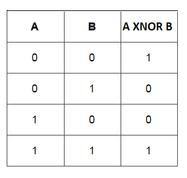
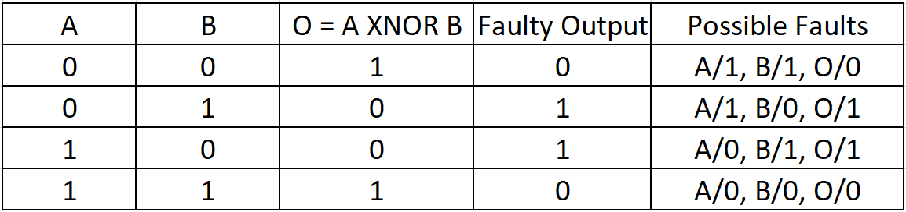

Theory
Introduction
Logic gates are the basic building blocks of any digital system. They are electronic circuits having one or more inputs and produce output that is some logical function of the input. The various logic gates are:AND, OR gate, NOT gate, NAND gate, NOR gate, Ex-OR gate and Ex-NOR gate.
1) Ex-OR gate
The 'Exclusive-OR' gate is a circuit which will give a high output if an odd number of inputs are high(1). An encircled plus sign (⊕) is used to show the Ex-OR operation.
Figure-1: Logic Symbol of Ex-OR gate

Table-1: Truth Table of Ex-OR gate
2) Ex-NOR gate
The 'Exclusive-NOR' gate circuit functions opposite to the EX-OR gate. It will give a low output if an odd number of inputs are high. The symbol is an EX-OR gate with a small circle on the output. The small circle represents inversion.Y= A⊕B
Figure-2: Logic Symbol of Ex-NOR gate

Table-2: Truth Table of Ex-NOR gate
Stuck at Faults
A Stuck at(SA) fault is a type of structural level fault model where one or more lines in the circuit is permanently fixed at logic level 0(SA0) or 1(SA1) due to some failures. It is a very popular fault model as it can model many realistic physical failures in Integrated Cicuits. Faults on a line L are denoted as L s-a-0 or L/0, and L s-a-1 or L/1. Fanout stems and branches(one wire branching off into two or more wires) are considered as separate lines, because SA faults in the branches may occur independent of its stem. Stuck at faults are further divided as:- Single SA fault: only one of the cicuit lines has a fault at any given time. This is the most widely used fault model in the industry. If the cicuit has n lines, total number of single SA faults is 2n(n SA0 + n SA1). Our experiment covers only single SA faults.
- Multiple SA fault: Any number of cicuit lines can be faulty at a given time. For a circuit with n lines, total number of multiple SA faults is 3^n - 1 (as each wire can be in one of three states:- SA0, SA1 and fault free, but not all of them can be fault free).
Table-3: XOR single-SA fault coverage

Table-4: XNOR single-SA fault coverage